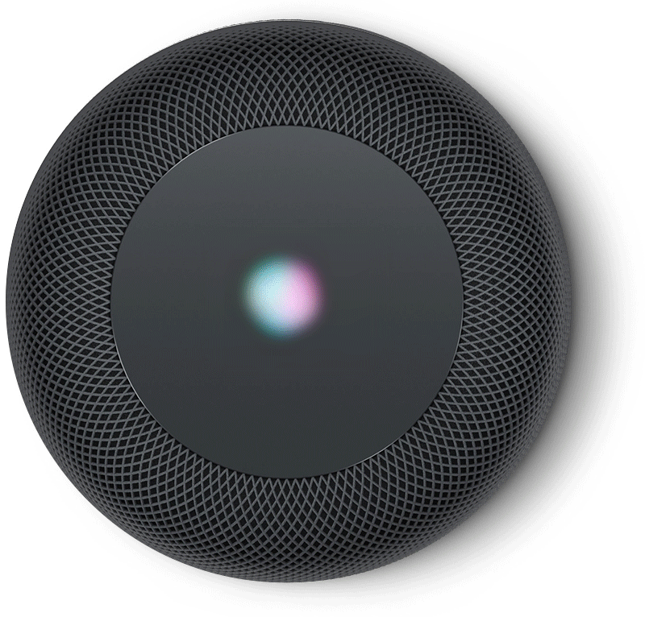

Almost all of the smart speakers have a mesh screen enclosing the sound-producing elements of the speaker, along with the computing hardware necessary to connect to the internet and operate the lights and buttons.
Each smart speaker has its own pattern of lights that glow on the top of the speaker when the conversational agent is listening or speaking.
